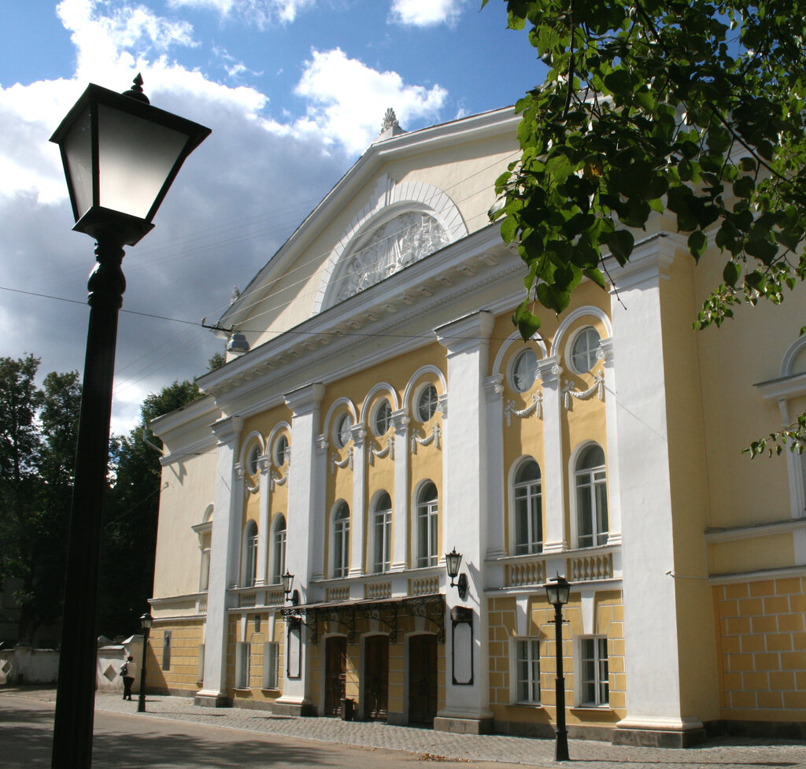
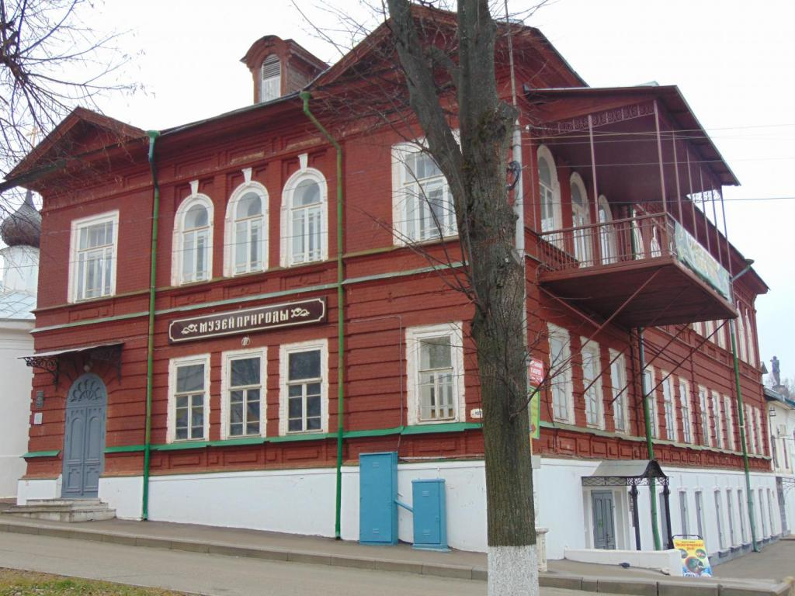
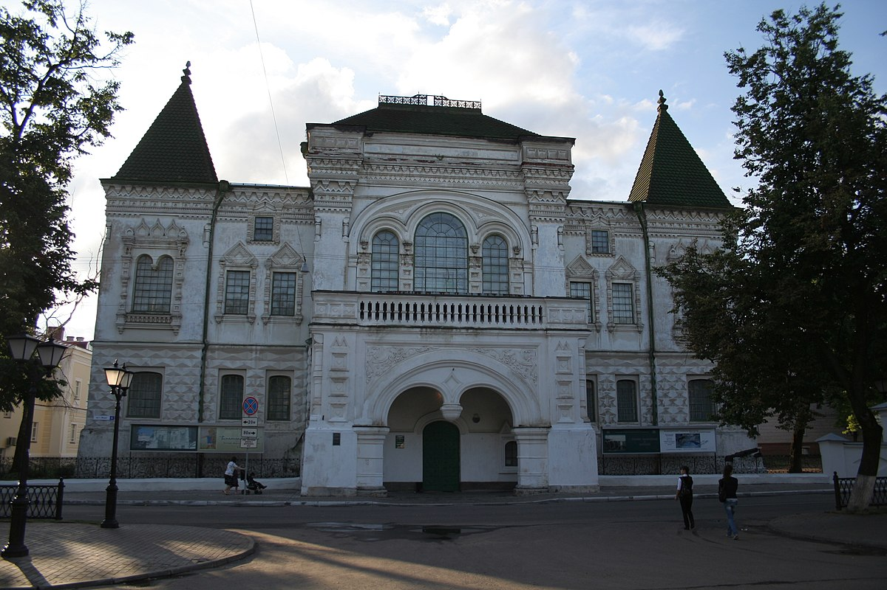

Кострома
Удивительный город, где сказка переплетается с былью, а история с современностью. «Пряничный» городок с многовековой историей. Родина династий Годуновых и Романовых. Родина Снегурочки. Место жительства Александра Островского. Признанная золотая столица России: в городе производится 30% всех ювелирных изделий, создающихся в нашей стране. Важная составляющая Золотого кольца России, Кострома — одна из самых посещаемых точек на карте Российской Федерации.

История театра восходит к началу XIX века, когда в старинном купеческом городе один за другим стали появляться любительские крепостные труппы, а к сезону 1808–1809 годов одна из них стала регулярно функционировать. Правда интерес к театру у города несколько снизился к середине XIX века, однако частые столичные гастролеры все-таки всколыхнули в горожанах потребность в своем собственном театре, и уже в 1963 году на пожертвования костромских театралов на Павловской улице было возведено здание театра, которое, к слову, и сохранилось до наших дней. Примерно в этот период в афише театра начинают появляться пьесы Островского.

Знания о любом крае будут неполными, если не познакомиться с его природой. Для жителей и гостей города такую возможность предоставляет Музей природы Костромской области. Отдел природы известен костромичам и гостям города с 1958 года. В стенах Ипатьевского монастыря располагались зрелищные диорамы, созданные лучшим таксидермистом Костромской области В.А. Тяком, и уникальная коллекция насекомых И.М. Рубинского.

Сегодня Костромской государственный историко-архитектурный и художественный музей-заповедник является одним из крупнейших музейных комплексов в Центральном федеральном округе. В состав музея входят пять зданий (памятников архитектуры), расположенных в исторической части Костромы. Собрание музея-заповедника насчитывает более 600 тысяч единиц.
